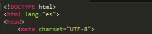

Pauta 3.1 Legible
Hacer que los contenidos textuales resulten legibles y comprensibles.
La información y el manejo de la interfáz de usuario deben ser comprensibles.
Hacer que los contenidos textuales resulten legibles y comprensibles.
El idioma predeterminado de cada página web puede ser determinado por software.
Una página de una universidad Ecuatoriana debe tener como lenguaje predeterminado el Español.
